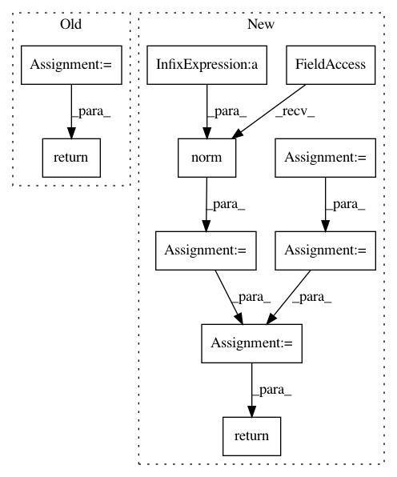

edd09dc25e1e31a26223a11fc54ce6b89970772e,thinc/backends/ops.py,Ops,cosine,#Ops#Any#Any#,282
Before Change
def cosine(self, X: Array, Y: ArrayT) -> float:
Xnorm = self.get_norm(X)
Ynorm = self.get_norm(Y)
return self.xp.dot(X, Y.T) / (Xnorm * Ynorm)
def cosine_abs_loss(self, X: Array, Y: ArrayT, ignore_zeros: bool = False) -> float:
cosine = self.cosine(X, Y)
losses = self.xp.abs(cosine - 1)
After Change
def cosine(self, X: Array, Y: ArrayT) -> float:
// Add a small constant to avoid 0 vectors
X = X + 1e-8
Y = Y + 1e-8
normX = self.xp.linalg.norm(X, axis=1, keepdims=True)
normY = self.xp.linalg.norm(Y, axis=1, keepdims=True)
mul_norms = normX * normY
cosine = (X * Y).sum(axis=1, keepdims=True) / mul_norms
return cosine
def cosine_abs_loss(self, X: Array, Y: ArrayT, ignore_zeros: bool = False) -> float:
cosine = self.cosine(X, Y)
losses = self.xp.abs(cosine - 1)
In pattern: SUPERPATTERN
Frequency: 3
Non-data size: 10
Instances
Project Name: explosion/thinc
Commit Name: edd09dc25e1e31a26223a11fc54ce6b89970772e
Time: 2020-01-15
Author: svlandeg@users.noreply.github.com
File Name: thinc/backends/ops.py
Class Name: Ops
Method Name: cosine
Project Name: LCAV/pyroomacoustics
Commit Name: 5214393bb75498ded8fc140914edd79c1799af05
Time: 2017-04-04
Author: fakufaku@gmail.com
File Name: pyroomacoustics/beamforming.py
Class Name: Beamformer
Method Name: steering_vector_2D_from_point
Project Name: LCAV/pyroomacoustics
Commit Name: 7a77233231c67038271c9945760b7a1d711b242d
Time: 2017-04-04
Author: fakufaku@gmail.com
File Name: pyroomacoustics/beamforming.py
Class Name: Beamformer
Method Name: steering_vector_2D_from_point